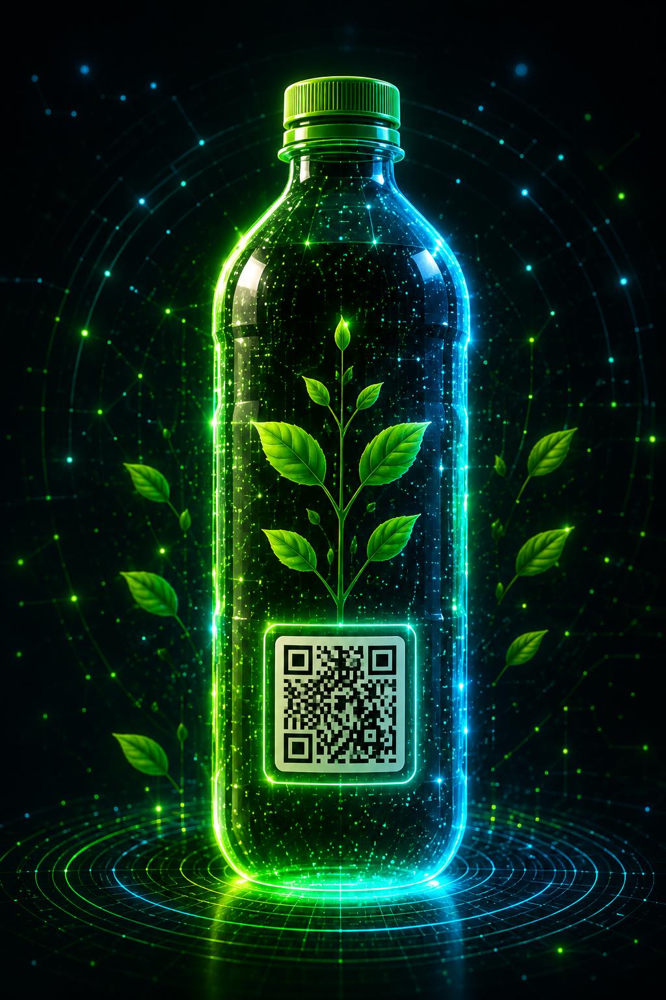

Transformamos botellas en vida.
BottleBloom utiliza IA, QR y Blockchain para convertir botellas PET en EcoBottles con biofertilizante y generar impacto real en la comunidad.

Problema ambiental
Muchas botellas PET terminan como residuos sin trazabilidad, sin clasificacion clara y sin una segunda vida util dentro de la comunidad educativa.
La falta de separacion reduce la posibilidad de reutilizar botellas y aumenta la contaminacion.
Reciclar suele sentirse lejano cuando no existe recompensa, seguimiento o impacto visible.
Sin registro digital, cada botella pierde su historia ambiental y su valor educativo.
El residuo puede convertirse en EcoBottle, aprendizaje, biofertilizante y comunidad.
Solucion BottleBloom
Una web app conectada a una estacion inteligente que clasifica, registra, recompensa y transforma botellas en experiencias ecologicas medibles.
La botella se analiza segun tipo, estado, color y potencial de reutilizacion.
Las botellas aptas pasan a limpieza y llenado con biofertilizante organico.
Cada EcoBottle recibe una identidad digital con historial e impacto.
La participacion se recompensa con monedas, retos, rachas y coleccionables ecologicos.
Como funciona
El flujo resume la arquitectura de BottleBloom desde la botella usada hasta el impacto ambiental visible en el dashboard.
ODS vinculadas
BottleBloom se vincula con educacion, comunidades sostenibles, consumo responsable y accion climatica.
Aprendizaje ambiental practico con tecnologia y participacion estudiantil.
Acciones comunitarias que reducen residuos y promueven cultura ambiental.
Reutilizacion de botellas PET mediante economia circular y trazabilidad.
Medicion del CO2 evitado y habitos sostenibles con impacto visible.
Equipo BottleBloom
Un equipo estudiantil que combina investigacion, diseno, comunicacion y liderazgo para convertir reciclaje en impacto real.
 Pamela RubioLider
Pamela RubioLider Emily OrozcoSecretaria
Emily OrozcoSecretaria Thomas HermidaExpositor
Thomas HermidaExpositor Emanuel GerardoDisenador
Emanuel GerardoDisenador Juan Diego MorenoInvestigador
Juan Diego MorenoInvestigador